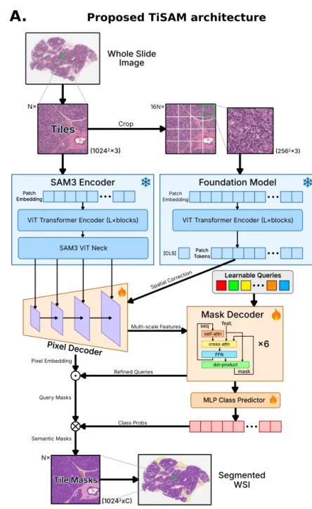

TiSAM: Tissue Segment Anything Model
Foundation models for tissue segmentation in whole-slide histopathology images.
Whole-slide images often contain many tissue classes and can look different across scanners. TiSAM combines spatial features from SAM3 with histopathology features from UNI2-h in a multiscale decoder for semantic tissue segmentation.
I am a co-author. The preprint is available on bioRxiv and the manuscript is under review at Nature Communications.
